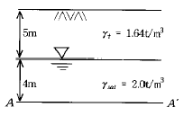
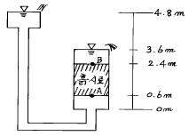
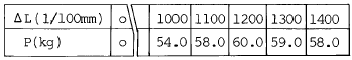

건설재료시험기사 (2004-03-07 기출문제)
1과목: 콘크리트공학
1. 매스 콘크리트의 균열을 방지하기 위한 대책이 아닌것은?
- 수화열이 적은 시멘트를 사용한다.
- 단위 시멘트량을 적게 한다.
- 슬럼프를 크게 한다.
- 골재치수를 크게 한다.
(정답률: 알수없음)

2. 고강도 콘크리트에서 유동화 콘크리트로 할 경우 슬럼프 값(cm)의 최대치는?
- 12
- 15
- 18
- 21
(정답률: 알수없음)
3. 크리프계수(ø)가 2.0인 콘크리트에서 탄성변형량이 2㎝라면 이 콘크리트는 크리프가 발생된 후의 전체변형량은 얼마인가?
- 2㎝
- 4㎝
- 6㎝
- 8㎝
(정답률: 알수없음)
4. 콘크리트 재료에 염화물이 많이 함유되어 시공할 구조물이 염해를 받을 가능성이 있는 경우에 대한 조치로서 틀린 것은?
- 물· 시멘트비를 작게하여 사용한다.
- 충분한 철근피복두께를 두어 열화에 대비한다.
- 가능한 균열폭을 작게 만든다.
- 단위수량을 늘려 염분을 희석시킨다.
(정답률: 알수없음)
5. 일반 수중콘크리트의 배합에 관한 설명으로 틀린 것은?
- 물-시멘트비는 50% 이하를 표준으로 한다.
- 단위시멘트량은 370kg 이상을 표준으로 한다.
- 잔골재율을 가능한한 작게 하여 재료분리를 방지한다.
- 굵은 골재는 둥근모양의 입도가 좋은 것을 사용한다.
(정답률: 알수없음)
6. 다음 서중(暑中) 콘크리트의 영향에 대한 설명 중 옳지 않은 것은?
- 소요의 단위수량이 증가하게 된다.
- 운반중 슬럼프가 떨어진다.
- 타설 후의 응결이 빠르며 수화열에 의해 온도가 상승 된다.
- 장기 강도가 증진된다.
(정답률: 알수없음)
7. 콘크리트를 배합설계 할 때 물-시멘트비를 정하는 기준이 아닌 것은?
- 내동해성
- 압축강도
- 단위시멘트량
- 내구성
(정답률: 알수없음)
8. 콘크리트의 양생에 관한 설명중 옳지 않은 것은?
- 습윤양생기간 중에 거푸집판이 건조하더라도 살수를 해서는 안된다.
- 콘크리트는 친 후 경화를 시작할 때까지 직사광선이나 바람에 의해 수분이 증발하지 않도록 방지해야 한다.
- 습윤양생에서 습윤상태의 보호기간은 보통포틀랜드시멘트를 사용하고 일평균기온이 15℃이상인 경우에 5일간 이상을 표준으로 한다.
- 막양생을 할 경우에는 사용전에 살포량, 시공방법 등에 관하여 시험을 통하여 충분히 검토해야 한다.
(정답률: 알수없음)
9. 콘크리트 비비기에 관한 설명 중 잘못된 것은?
- 되비비기는 응결이 시작된 이후 다시 비비는 경우로서 강도가 저하한다.
- 연속믹서를 사용할 경우 비비기 시작 후 최초에 배출되는 콘크리트는 사용해서는 안된다.
- 비비기는 미리 정해 둔 비비기 시간이상 계속해서는 안된다.
- 비비기를 시작하기 전에 미리 믹서에 모르타르를 부착시켜야 한다.
(정답률: 알수없음)
10. 굵은골재의 최대치수에 관한 설명으로 맞는 것은?
- 일반적인 구조물인 경우 15㎜ 이하를 표준으로 한다
- 단면이 큰 구조물인 경우 50㎜ 이하를 표준으로 한다
- 부재의 최소치수의 1/5을 초과해서는 안된다
- 철근의 최소 수평, 수직 순간격의 4/3를 초과해서는 안된다
(정답률: 알수없음)
11. 굳지않은 콘크리트의 압력법에 의한 공기량 시험법에 대한 설명으로 잘못된 것은?
- 이 시험방법의 원리는 보일의 법칙(Boyle's law)을 응용한 것이다.
- 이 시험방법은 다공질의 골재를 사용한 콘크리트의 공기량 측정에 편리하다.
- 콘크리트 시료는 용기에 3층으로 나누어 채우고 다짐 막대로 각층 25회씩 다진다.
- 골재 수정계수는 골재 낱알의 내부에 포함되는 공기가 시험의 결과에 미치는 영향을 고려하기 위한 계수이다.
(정답률: 알수없음)
12. 콘크리트 현장배합의 경우 골재의 계량오차는 1회 계량분에 대하여 다음 얼마의 값 이하라야 하나?
- 1 %
- 2 %
- 3 %
- 4 %
(정답률: 알수없음)
13. 프리스트레스트 콘크리트(PSC)에서 PSC를 철근콘크리트(RC)와 같이 생각하여 콘크리트는 압축력을 받고 긴장재는 인장력을 받게하여 두힘의 우력 모멘트로 외력에 의한 휨모멘트에 저항 한다고 생각하는 개념은?
- 응력개념
- 내력개념
- 하중평형개념
- 균등질보의 개념
(정답률: 알수없음)
14. 콘크리트 압축강도 평가에 대한 설명 중 틀린 것은?
- 재하속도가 빠를수록 압축강도는 높게 평가된다.
- 모양이 다르면 크기가 작은 공시체의 압축강도가 높게 평가된다.
- 공시체 직경(D)와 높이(H)의 비(H/D)가 동일하면 원주형 공시체가 각주형 공시체보다 압축강도는 작게 평가된다.
- 원주형과 각주형 공시체는 직경 또는 한변의 길이(D)와 높이(H)의 비(H/D)가 작을수록 압축강도는 높게 평가된다.
(정답률: 알수없음)
15. 댐 콘크리트 등 몇가지를 제외하고는 일반적인 경우에 표준양생한 재령 28일 공시체의 압축강도를 콘크리트의 설계기준강도로 정하고 있다. 그 이유로서 가장 적당한 것은?
- 크리이프와 건조수축이 장기적으로 발생하므로
- 양생방법에 따라 다르나 재령 28일에서 강도발현이 최대가 되므로
- 실제구조물에서 재령 28일이후의 강도증진을 크게 기대할 수가 없으므로
- 거푸집 및 동바리제거의 시기가 타설 후 28일 이므로
(정답률: 알수없음)
16. 구조물이 공용 중의 발생되는 손상을 복구하는데 있어서 보수 및 보강 공사를 시행한다. 다음 중 보수 공법에 속하지 않는 것은?
- 에폭시 주입 공법
- 철근 방청 공법
- 표면 보호 공법
- 강판 접착 공법
(정답률: 알수없음)
17. 다음 중 콘크리트의 탄성계수에 대한 설명으로 잘못된 것은?
- 콘크리트의 탄성계수는 일반적으로 응력-변형도 곡선의 1/3∼1/4 점에 있는 할선계수를 이용한다.
- 같은 종류의 콘크리트에서는 압축강도가 클수록 탄성계수도 크게 나타난다.
- 같은 강도의 콘크리트에서는 보통 콘크리트 보다도 경량 콘크리트 쪽이 탄성계수가 작다.
- 콘크리트의 탄성계수가 큰 것일수록 같은 응력을 가할 때 변형량이 크다는 것을 의미한다.
(정답률: 알수없음)
18. 프리스트레스트콘크리트의 균열발생 전에 단면에 일어나는 응력을 해석하기 위한 가정으로 잘못된 것은?
- 단면의 변형률은 중립축으로부터의 거리에 비례한다.
- 콘크리트와 PS강재 및 보강철근은 탄성체로 본다.
- 단면의 중립축을 경계로 인장측의 콘크리트 응력은 무시한다.
- 긴장재를 부착시키기 전의 단면의 계산에 있어서는 덕트의 단면적을 공제한다.
(정답률: 알수없음)
19. 일정 슬럼프의 콘크리트를 얻기 위해 필요한 단위수량에 관한 다음 설명 중 옳은 것은?
- 외기온도가 높을수록 필요한 단위수량은 작아진다.
- 굵은골재 최대치수를 크게 하면 필요한 단위수량은 커진다.
- AE제를 사용하면 필요한 단위수량은 커진다.
- 쇄사를 사용하면 강모래를 사용한 경우보다도 필요한 단위수량은 커진다.
(정답률: 알수없음)
20. 한중 콘크리트의 타설에 있어, 보통 운반 및 타설시간 1시간에 대해 콘크리트의 온도저하를 콘크리트 온도와 기온차이의 15%라고 할 경우, 혼합직후의 콘크리트 온도가 20℃, 주위의 기온이 4℃, 혼합으로부터 타설종료까지의 시간이 2시간 이었다면, 콘크리트의 온도저하치는?
- 4.0℃
- 4.8℃
- 5.4℃
- 6.0℃
(정답률: 알수없음)
2과목: 건설시공 및 관리
21. 공정관리에서 PERT와 CPM의 비교 설명중 옳은 것은?
- PERT는 반복사업에 CPM은 신규사업에 좋다.
- PERT는 1점 시간추정이고 CPM은 3점 시간추정이다.
- PERT는 작업활동 중심관리이고 CPM은 작업단계 중심 관리이다.
- PERT는 공기단축이 주목적이고 CPM은 공비절감이 주목적이다.
(정답률: 알수없음)
22. AASHTO 콘크리트포장설계시 설계입력자료가 아닌 것은?
- 교통조건
- 신뢰도 및 표준편차
- 설계서비스지수 손실량
- 최적배합비
(정답률: 알수없음)
23. 도로공사에서 성토해야 할 토량이 36,000m3인데 흐트러진 토량이 30,000m3가 있다. 이때 L = 1.25,C = 0.9라면 자연상태 토량의 부족 토량은?
- 8000m3
- 12000m3
- 16000m3
- 20000m3
(정답률: 알수없음)
24. 다음 조건일때 트렉터 쇼벨(Tractor shovel)운전 1시간당 싣기 작업량은 어느 것인가? (단, 버켓 평적용량 1.0m3, 버켓계수 1.0, 사이클 타임(cycle time) 50sec, f = 1.0, E = 0.75)
- 125m3/h
- 90m3/h
- 54m3/h
- 40m3/h
(정답률: 알수없음)
25. 다음은 흙쌓기 재료로서 구비해야 할 성질이다. 틀린 것은?
- 완성 후 큰 변형이 없도록 지지력이 클 것
- 압축침하가 적도록 압축성이 클 것
- 흙쌓기 비탈면의 안정에 필요한 전단강도를 가질 것
- 시공기계의 Trafficability가 확보될 것
(정답률: 알수없음)
26. 지반안정용액을 주수하면서 수직굴착하고 철근 콘크리트를 타설한 후 굴착하는 공법으로 타공법에 비해 차수성이 우수하고 지반변위가 작은 토류공법은?
- 강널말뚝 흙막이벽
- 벽강관 널말뚝 흙막이벽
- 벽식연속 지중벽 공법
- Top down 공법
(정답률: 알수없음)
27. 함수비가 큰 점질토의 다짐에 적합한 다짐 기계는 어느것인가?
- 로드 롤러(Road Roller)
- 진동 롤러
- 탬핑 롤러(Tamping Roller)
- 타이어 롤러(Tire Roller)
(정답률: 알수없음)
28. 보조기층, 입도 조정기층 등에 침투시켜 이들 층의 방수성을 높이고 그 위에 포설하는 아스팔트 혼합물과의 부착을 잘 되게 하기 위하여 보조기층 또는 기층위에 역층재를 살포하는 것을 무엇이라 하는가?
- 프라임 코트(prime coat)
- 택 코트(tack coat)
- 실 코트(seal coat)
- 패칭(patching)
(정답률: 알수없음)
29. 시료의 크기가 일정하지 않을 경우 단위시료당 나타나는 결점수에 따라 공정을 관리하는 것은?
- P관리도
- Pn관리도
- U관리도
- C관리도
(정답률: 알수없음)
30. 암석의 발파이론에서 Hauser의 발파 기본식은? (단, L=폭약량, C=발파계수, W=최소저항선)
- L=C·W
- L=C·W2
- L=C·W3
- L=C·W4
(정답률: 알수없음)
31. 사이폰 관거(syphon drain)에 대한 다음 설명 중 옳지 않은 것은?
- 암거가 앞뒤의 수로바닥에 비하여 대단히 낮은 위치에 축조된다.
- 일종의 집수암거로 주로 하천의 복류수를 이용하기 위하여 쓰인다.
- 용수, 배수, 운하 등 성질이 다른 수로가 교차하지만 합류시킬 수 없을 때 사용한다.
- 다른 수로 혹은 노선과 교차할 때 사용된다.
(정답률: 알수없음)
32. 본 바닥의 토량 500 m3을 공사 기일상 6일동안에 걸쳐 성토장까지 운반하고자 한다. 이때 필요한 덤프트럭은 몇 대인가? (단, 토량 변화율은 1.20, 1대 1일당의 운반횟수는 5회, 덤프트럭의 적재용량은 5m3으로 한다.)
- 2대
- 3대
- 4대
- 5대
(정답률: 알수없음)
33. 다음의 연약지반 처리 공법 중에서 일시적인 공법이 아닌것은?
- 약액주입공법
- 동결공법
- 대기압공법
- 웰포인트공법
(정답률: 알수없음)
34. 강트러스의 교량가설공법중 동바리조립이 곤란하고 교통량이 많은 도로, 양안이 암반이고 유수가 심한 계곡에 가설하는데 적당한 공법은 무엇인가?
- 캔틸레버식 공법
- 케이블 공법
- 새들 공법
- 밴트 공법
(정답률: 알수없음)
35. 터널에 있어서 인버트 아아치(Invert arch)를 설치할 필요가 있는 경우는 언제인가?
- 지질이 불량할 때
- 경사가 클 때
- 단면을 크게 굴착할 때
- 용수(湧水)가 많을 때
(정답률: 알수없음)
36. 휠 댐(Fill type dam)의 특징을 설명한 내용으로 틀린것은?
- 현장 부근에 있는 자연재료를 사용한다.
- 일반적인 토공용 중장비를 사용한다.
- 여수로의 설치가 필요치 않아 공사비가 저렴하다.
- 기초 바닥의 지질은 굳은 암반이 아니라도 좋다.
(정답률: 알수없음)
37. 노상위에 포장하는 것으로 윤하중을 고르게 분포시키는 역할을 하는 층을 무엇이라 하는가?
- 표층
- 차단층
- 보조기층
- 중간층
(정답률: 알수없음)
38. Terzaghi의 기초에 대한 극한 지지력 공식에 대한 다음 설명중 옳지 않은 것은?
- 지지력 계수는 내부 마찰각이 커짐에 따라 작아진다.
- 직사각형 단면의 형상계수는 폭과 길이에 따라 정해진다.
- 근입 깊이가 깊어지면 지지력도 증대된다.
- 점착력이 ø≒0인 경우 일축 압축시험에 의해서도 구할 수 있다.
(정답률: 알수없음)
39. 프리팩트 콘크리트(prepacked concrete)공법은 특히 어느경우에 유리한 공법인가?
- 경량 콘크리트치기
- 중량 콘크리트치기
- 수중 콘크리트치기
- 서중 콘크리트치기
(정답률: 알수없음)
40. 말뚝박기에 사용하는 해머에 대한 설명으로 옳지 않은 것은?
- 스팀해머(steam hammer)는 경사말뚝의 항타에 유리하다.
- 스팀해머는 시공설비가 간단하며 소규모의 현장에 적합하다.
- 바이브로 해머는 말뚝박기와 빼기에도 효과적이다.
- 디이젤 해머는 구조가 간단하고 능률이 좋아서 많이 사용된다.
(정답률: 알수없음)
3과목: 건설재료 및 시험
41. 콘크리트 제조용 쇄석에 대한 설명이다. 잘못된 것은?
- 강자갈을 사용할 때보다 콘크리트의 유동성이 좋아진다.
- 콘크리트 제조용으로 적당한 쇄석은 그 입도가 대, 소립이 적당하게 혼합된 것이어야 한다.
- 부순자갈이나 폭파에 의해 채굴한 암석을 파쇄하여 체로 친 후 분류한 골재를 말한다.
- 강자갈을 사용한 콘크리트와 비교하여 강도는 증가하나 수밀성, 내구성 등은 오히려 저하된다.
(정답률: 알수없음)
42. 잔골재 A의 FM이 2.5이고, 잔골재 B의 FM이 2.9일 때, 이 잔골재 A와 B를 섞어 조립율 2.8의 잔골재를 만들려면 A와 B의 중량비를 얼마로 섞어야 하는가?
- 1 : 1
- 1 : 2
- 1 : 3
- 1 : 4
(정답률: 알수없음)
43. 건설재료용 석재에 관한 설명중에서 틀린 것은?
- 대리석은 강도는 매우 크지만 내구성이 약하며, 풍화하기 쉬우므로 실외에 사용하는 경우는 드물고, 실내장식용으로 많이 사용된다.
- 석회암은 석회물질이 침전응고한 것으로서 용도는 부순돌석회, 시멘트, 비료 등의 원료 및 제철시의 용매제등에 사용된다.
- 혈암(頁岩)은 점토가 불완전하게 응고된 것으로서, 색조는 흑색, 적갈색 및 녹색이 있으며, 부순돌, 인 공경량골재 및 시멘트 제조시 원료로 많이 사용된다.
- 화강암은 화성암 중에서도 심성암에 속하며, 화강암의 특징은 조직이 불균일하고 내구성, 강도가 적고, 내화성이 약한 약점이 있다.
(정답률: 알수없음)
44. 조강 포틀랜드 시멘트 사용시 옳지 않은 것은?
- 거푸집을 단 시일내에 제거할 수 있다.
- 수화열이 크므로 단면이 큰 콘크리트 구조물에 적당하다.
- 양생기간을 단축시킨다.
- 한중공사에 적합하다.
(정답률: 알수없음)
45. 다음 혼화제중 계면활성작용(Surface active reaction)에 의해 워커빌리티, 내동해성을 개선시키는 것이 아닌것은?
- 팽창제
- AE제
- 감수제
- 고성능감수제
(정답률: 알수없음)
46. 일반적으로 알루미늄 분말을 사용하며 프리팩트 콘크리트용 그라우트 또는 건축분야에서 부재의 경량화 등의 용도로 사용되는 혼화제는?
- AE제
- 방수제
- 방청제
- 발포제
(정답률: 알수없음)
47. 아스팔트 혼합물의 겉보기 밀도가 2.25g/cm3이고, 최대밀도가 2.40g/cm3이라면 아스팔트의 공극률은?
- 0.625%
- 6.25%
- 6.67%
- 0.667%
(정답률: 알수없음)
48. 인공경량골재나 고로슬래그 골재처럼 공극이 많은 골재를 사용할 때 콘크리트 제조 전에 반드시 해야 될 작업은?
- 프리웨팅(Pre-wetting)
- 파이프 쿨링(Pipe-cooling)
- 소성작업
- 급냉처리 작업
(정답률: 알수없음)
49. 포졸란을 사용한 콘크리트의 특징으로 옳지 않은 것은?
- 발열량이 적어 장기강도가 적다.
- 워커빌리티를 개선시키고 재료의 분리가 작다.
- 내구성 및 수밀성이 크다.
- 해수에 대한 화학적 저항성이 크다.
(정답률: 알수없음)
50. 다음 중 시멘트의 성질과 그 성질을 측정하는 시험기가 잘못 짝지어진 것은?
- 응결-길모아침
- 비중-르샤틀리에병
- 안정성-오토클레이브
- 풍화-로스앤젤레스시험기
(정답률: 알수없음)
51. 다이너 마이트 중 폭발력이 가장 강하여 터널과 암석발파에 주로 사용되는 것은?
- 규조토 다이너 마이트
- 교질 다이너 마이트
- 스트레이트 다이너 마이트
- 분상 다이너 마이트
(정답률: 알수없음)
52. 건설재료용으로 사용되는 목재의 성질에 관한 설명으로 틀린 것은?
- 목재 섬유에 직각방향의 압축강도가 낮은 것은 섬유에 평행방향의 전단강도가 낮은 점과 마찬가지로 큰 결점중의 하나이다
- 목재의 탄성계수는 압축, 휨, 인장시험에 따라 약간 달라진다. 일반적으로 압축시험에 의해 구한 탄성계수가 인장시험에 의해 구한 값보다 작다
- 목재의 내화성 증진을 목적으로 실시하는 처리방법에는 표면탄화법, 약제도포법 및 방부제 주입법이 있다
- 합판(plywood)은 팽창, 수축등에 의한 결점이 적고, 방향에 따른 강도차이가 없고, 폭이 넓은 판을 쉽게 얻을 수 있으며, 제품의 규격화로 사용상에 유리하다
(정답률: 알수없음)
53. 건설공사 품질시험기준중 동상방지층 및 보조기층의 현장 밀도 시험은 2차선 기준으로 층별 몇 m마다 시행하여야 하는가?
- 50m
- 100m
- 200m
- 300m
(정답률: 알수없음)
54. 다음 설명은 플라스틱의 장점에 관한 설명이다. 옳지 않은 것은 어느 것인가?
- 경량으로 강인하다.
- 탄성 계수가 크다.
- 공장의 대량 생산이 가능하다.
- 내절연성, 착색의 자유 및 투광성이 우수하다.
(정답률: 알수없음)
55. 강(鋼)의 화학적 성분중에서 취성(brittleness)을 증가시키는 가장 큰 성분은?
- 탄소(C)
- 인(P)
- 망간(Mn)
- 규소(Si)
(정답률: 알수없음)
56. 다음 중 아스팔트의 침입도에 대한 설명으로 틀린 것은?
- 온도가 상승하면 침입도는 감소한다.
- 침입도지수란 온도에 대한 침입도의 변화를 나타내는 지수이다.
- 스트레이트 아스팔트가 블로운 아스팔트보다 침입도가 크다.
- 침입도는 100g의 침으로 25℃에서 5초동안 관입한 값으로 나타낸다.
(정답률: 알수없음)
57. 비중이 2.8이고 단위용적중량이 2.65t/m3인 골재의 실적률과 공극률을 계산하면?
- 실적률 : 94.64%, 공극률 : 5.36%
- 실적률 : 94.82%, 공극률 : 5.18%
- 실적률 : 95.64%, 공극률 : 4.36%
- 실적률 : 95.82%, 공극률 : 4.18%
(정답률: 알수없음)
58. 건설공사 품질시험기준에서 도로공사 노체에 사용되는 흙의 시험종목이 아닌 것은?
- 함수량시험
- 평판재하시험
- 푸르프롤링시험
- 현장밀도시험
(정답률: 알수없음)
59. 역청재에 대한 설명중 옳지 않은 것은?
- 석유 아스팔트는 원유를 증류한 잔유물을 원료로 한것이다.
- 아스팔타이트의 성질 및 용도는 스트레이트 아스팔트와 같이 취급한다.
- 포장용 타르는 타르를 다시 분류하여 정제하여 만든 것이다.
- 역청유제는 역청을 유화제 수용액중에 미립자의 상태로 분포시킨 것이다.
(정답률: 알수없음)
60. 다루기 쉽고 안전하여 안전폭약이라고 하며, 흡습성이 보통 폭약보다 크므로 취급시 방습에 특히 유의를 해야 하나, 값이 저렴하여 채석, 채광, 갱 등의 발파에 많이 사용하는 폭약은?
- 질산암모늄계 폭약
- 칼릿
- 다이너 마이트
- 니트로 글리세린
(정답률: 알수없음)
4과목: 토질 및 기초
61. 그림과 같은 정수 중에 있는 포화토의 A-A'면에서의 유효응력은?

- 12.2t/m2
- 16.0t/m2
- 1.22t/m2
- 1.60t/m2
(정답률: 알수없음)
62. 어떤 흙의 변수위 투수시험을 한 결과 시료의 직경과 길이가 각각 5.0cm, 2.0cm이었으며, 유리관의 내경이 4.5mm, 1분 10초 동안에 수두가 40cm에서 20cm로 내렸다. 이 시료의 투수계수는?
- 4.95× 10-4 cm/s
- 5.45× 10-4 cm/s
- 1.60× 10-4 cm/s
- 7.39× 10-4 cm/s
(정답률: 알수없음)
63. 지표가 수평인 곳에 높이 5m의 연직옹벽이 있다. 흙의 단위중량이 1.8t/m3, 내부 마찰각이 30° 이고 점착력이 없을 때 주동토압은 얼마인가?
- 4.5 t/m
- 5.5 t/m
- 6.5 t/m
- 7.5 t/m
(정답률: 알수없음)
64. 점토 지반의 강성 기초의 접지압 분포에 대한 설명으로 옳은 것은?
- 기초 모서리 부분에서 최대응력이 발생한다.
- 기초 중앙 부분에서 최대응력이 발생한다.
- 기초 밑면의 응력은 어느 부분이나 동일하다.
- 기초 밑면에서의 응력은 토질에 관계없이 일정하다.
(정답률: 알수없음)
65. 표준관입시험에 관한 설명 중 옳지 않은 것은 ?
- 표준관입시험의 N값으로 모래지반의 상대밀도를 추정할 수 있다.
- N값으로 점토지반의 연경도에 관한 추정이 가능하다.
- 지층의 변화를 판단할 수 있는 시료를 얻을 수 있다.
- 모래지반에 대해서도 흐트러지지 않은 시료를 얻을 수 있다.
(정답률: 알수없음)
66. 다음의 시험법중 측압을 받는 지반의 전단강도를 구하는 데 가장 좋은 시험법은?
- 일축압축 시험
- 표준관입 시험
- 콘관입 시험
- 삼축압축 시험
(정답률: 알수없음)
67. 실트, 점토가 물속에서 침강하여 이루어진 구조로 단립구조보다 간극비가 크고 충격과 진동에 약한 흙의 구조는?
- 분산구조
- 면모구조
- 낱알구조
- 봉소구조
(정답률: 알수없음)
68. sand drain 공법에서 sand pile을 정삼각형으로 배치할때 모래기둥의 간격은? (단, pile의 유효지름은 40㎝ 이다.)
- 38㎝
- 40㎝
- 42㎝
- 44㎝
(정답률: 알수없음)
69. ＩL = (W-Wp) / Ｉp 식으로 나타내는 액성지수(Liquidity index)에 관한 다음 사항 중 옳지 않은 것은?
- 액성지수의 값은 일반적인 경우 0에서 1사이이다.
- 액성지수의 값이 1에 가깝다는 것은 유동(流動)의 가능성을 뜻한다.
- 액성지수의 값이 0에 가깝다는 것은 안정된 점토를 뜻한다.
- 액성지수의 값은 흙의 투수계수를 추정하는데 이용된다.
(정답률: 알수없음)
70. 다음 그림에서와 같이 물이 상방향으로 일정하게 흐를때 A, B양단에서의 전수두차를 구하면?

- 1.8m
- 3.6m
- 1.2m
- 2.4m
(정답률: 알수없음)
71. 도로지반의 평판재하실험에서 1.25mm 침하될 때 하중강도가 2.5kg/cm2일 때 지지력계수 K는?
- 2kg/cm3
- 20kg/cm3
- 1kg/cm3
- 10kg/cm3
(정답률: 알수없음)
72. 다짐에 대한 다음 설명 중 틀린 것은?
- 세립토가 많을수록 최적 함수비는 증가한다.
- 세립토가 많을수록 최대건조단위 중량이 증가한다.
- 다짐곡선이라 함은 건조단위 중량과 함수비 관계를 나타낸 것이다.
- 다짐에너지가 클수록 최적 함수비는 감소한다.
(정답률: 알수없음)
73. 어떤 시료의 압밀 시험 결과 Cv = 2.3 × 10-3㎝2/sec라면 두께 2㎝인 공시체가 압밀도 50%에 소요되는 시간은?
- 1.43분
- 1.53분
- 1.63분
- 1.73분
(정답률: 알수없음)
74. 무게 320㎏인 드롭햄머(drop hammer)로 2m의 높이에서 말뚝을 때려 박았더니 침하량이 2㎝ 이었다. Sander의 공식을 사용할 때 이 말뚝의 허용지지력은?
- 1,000 ㎏
- 2,000 ㎏
- 3,000 ㎏
- 4,000 ㎏
(정답률: 알수없음)
75. 동상 방지대책에 대한 설명 중 옳지 않은 것은?
- 배수구 등을 설치해서 지하수위를 저하시킨다.
- 모관수의 상승을 차단하기 위해 조립의 차단층을 지하수위보다 높은 위치에 설치한다.
- 동결 깊이보다 낮게 있는 흙을 동결하지 않는 흙으로 치환한다.
- 지표의 흙을 화학약품으로 처리하여 동결온도를 내린다.
(정답률: 알수없음)
76. 습윤단위 중량이 2.0t/m3, 함수비 20%, Gs = 2.7인 경우 포화도는?
- 86.1%
- 87.1%
- 95.6%
- 100%
(정답률: 알수없음)
77. 활동면위의 흙을 몇개의 연직 평행한 절편으로 나누어 사면의 안정을 해석하는 방법이 아닌 것은?
- Fellenius 방법
- 마찰원법
- Spencer 방법
- Bishop의 간편법
(정답률: 알수없음)
78. 점착력이 0.8t/m2, 내부 마찰각이 30° , 단위체적중량 1.6t/m3인 흙이 있다. 이 흙에 인장균열은 약 몇 m 깊이까지 발생할 것인가?
- 6.92m
- 3.73m
- 1.73m
- 1.0m
(정답률: 알수없음)
79. 기초폭 4m의 연속기초를 지표면 아래 3m 위치의 모래 지반에 설치하려고 한다. 이때 표준 관입시험 결과에 의한 사질지반의 평균 N 값이 10일 때 극한 지지력은? (단, Meyerhof 공식 사용)
- 420 t/m2
- 210 t/m2
- 1⑤ t/m2
- 75 t/m2
(정답률: 알수없음)
80. 어떤 시료에 대해 액압 1.0㎏/㎝2를 가해 다음 표와 같은 결과를 얻었다. 파괴시의 축차응력은? (단, 피스톤의 지름과 시료의 지름은 같다고 보며 시료의 단면적 Ao = 18㎝2, 길이 L = 14㎝이다.)

- 3.⑤㎏/㎝2
- 2.55㎏/㎝2
- 2.⑤㎏/㎝2
- 1.55㎏/㎝2
(정답률: 알수없음)